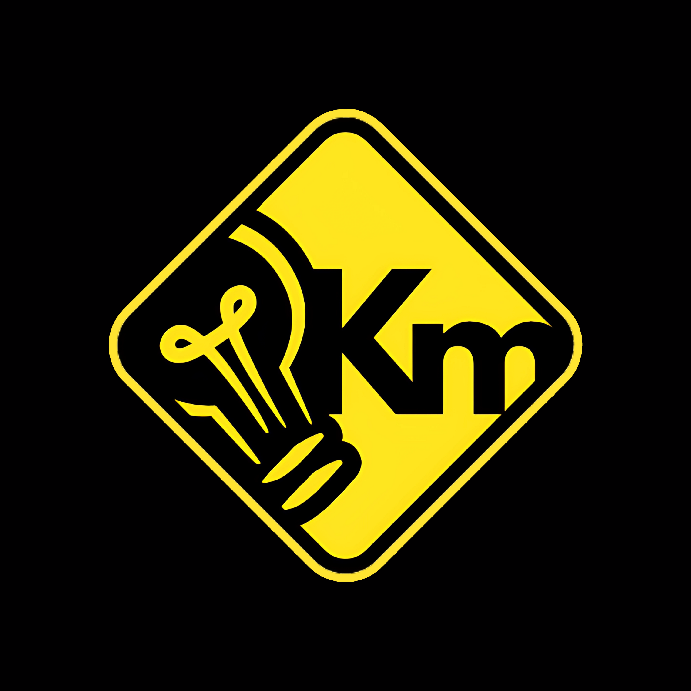

Campañas
Brújula Rubiense
Una campaña diseñada para resaltar los lugares más emblemáticos de Junín, compartiendo su historia y atractivo turístico. Además, busca promover la gastronomía local, dando a conocer los platos y comidas típicas que forman parte de la identidad del municipio.

Kilómetros de Conciencia
Iniciativa enfocada en educar a la población sobre la importancia de la seguridad vial. A través de contenido informativo y reflexivo, busca fomentar el respeto por las normas de tránsito y promover una movilidad segura y responsable.